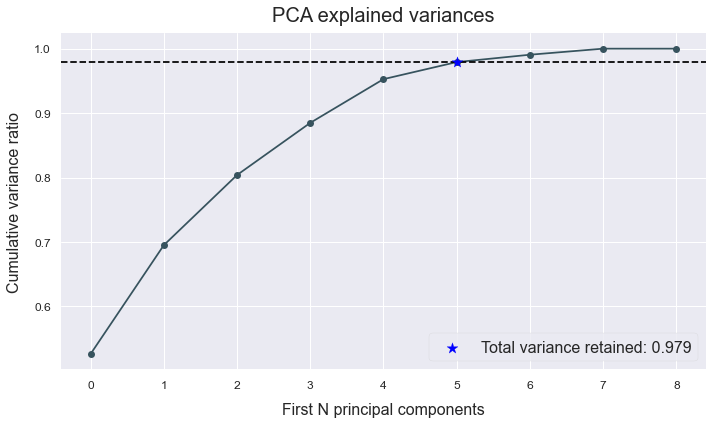
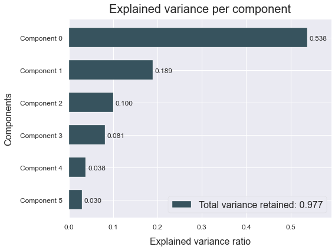
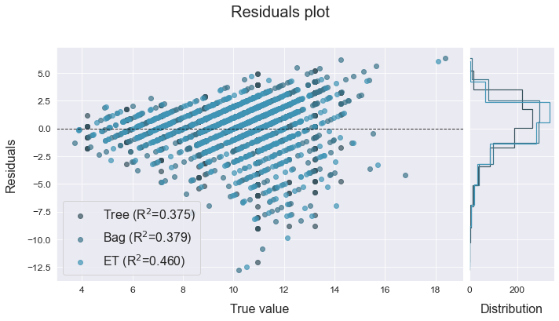
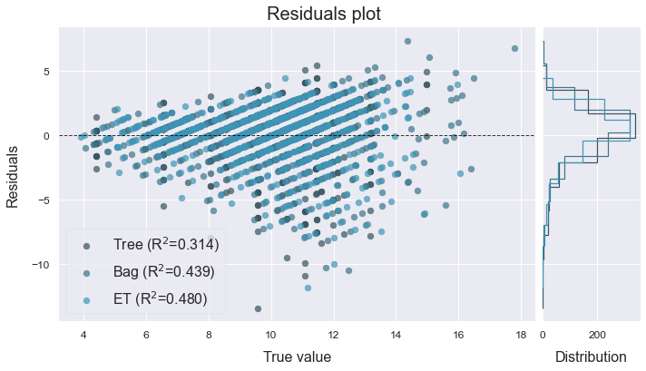
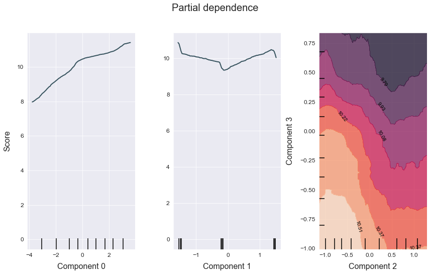

Regression
This example shows how to use ATOM to apply PCA on the data and run a regression pipeline.
Download the abalone dataset from https://archive.ics.uci.edu/ml/datasets/Abalone. The goal of this dataset is to predict the rings (age) of abalone shells from physical measurements.
Load the data
# Import packages
import pandas as pd
from atom import ATOMRegressor
# Load the abalone dataset
X = pd.read_csv('./datasets/abalone.csv')
# Let's have a look at the data
X.head()
| Sex | Length | Diameter | Height | Whole weight | Shucked weight | Viscera weight | Shell weight | Rings | |
|---|---|---|---|---|---|---|---|---|---|
| 0 | M | 0.455 | 0.365 | 0.095 | 0.5140 | 0.2245 | 0.1010 | 0.150 | 15 |
| 1 | M | 0.350 | 0.265 | 0.090 | 0.2255 | 0.0995 | 0.0485 | 0.070 | 7 |
| 2 | F | 0.530 | 0.420 | 0.135 | 0.6770 | 0.2565 | 0.1415 | 0.210 | 9 |
| 3 | M | 0.440 | 0.365 | 0.125 | 0.5160 | 0.2155 | 0.1140 | 0.155 | 10 |
| 4 | I | 0.330 | 0.255 | 0.080 | 0.2050 | 0.0895 | 0.0395 | 0.055 | 7 |
# Initialize ATOM for regression tasks and encode the categorical features
atom = ATOMRegressor(X, y="Rings", verbose=2, random_state=42)
atom.encode()
<< ================== ATOM ================== >>
Algorithm task: regression.
Applying data cleaning...
Dataset stats ================= >>
Shape: (4177, 9)
Categorical columns: 1
Scaled: False
----------------------------------
Train set size: 3342
Test set size: 835
Fitting Encoder...
Encoding categorical columns...
--> One-hot-encoding feature Sex. Contains 3 unique categories.
# Plot the dataset's correlation matrix
atom.plot_correlation()

# Apply PCA for dimensionality reduction
atom.feature_selection(strategy="pca", n_features=6)
Fitting FeatureSelector...
Performing feature selection ...
--> Feature Diameter was removed due to collinearity with another feature.
--> Applying Principal Component Analysis...
>>> Scaling features...
>>> Total explained variance: 0.979
# Use the plotting methods to see the retained variance ratio
atom.plot_pca()
atom.plot_components(figsize=(8, 6), filename='atom_PCA_plot')


Run the pipeline
atom.run(['Tree', 'Bag', 'ET'],
metric='MSE',
n_calls=5,
n_initial_points=2,
bo_params={'base_estimator': 'GBRT', 'cv': 1},
bagging=5)
Running pipeline ============================= >>
Models in pipeline: Tree, Bag, ET
Metric: neg_mean_squared_error
Running BO for Decision Tree...
Random start 1 ----------------------------------
Parameters --> {'criterion': 'mae', 'splitter': 'random', 'max_depth': 5, 'max_features': 0.9, 'min_samples_split': 8, 'min_samples_leaf': 19, 'ccp_alpha': 0.003}
Evaluation --> neg_mean_squared_error: -7.5202 Best neg_mean_squared_error: -7.5202
Time iteration: 0.035s Total time: 0.040s
Random start 2 ----------------------------------
Parameters --> {'criterion': 'mae', 'splitter': 'best', 'max_depth': 10, 'max_features': 0.9, 'min_samples_split': 3, 'min_samples_leaf': 12, 'ccp_alpha': 0.033}
Evaluation --> neg_mean_squared_error: -9.4081 Best neg_mean_squared_error: -7.5202
Time iteration: 0.227s Total time: 0.272s
Iteration 3 -------------------------------------
Parameters --> {'criterion': 'friedman_mse', 'splitter': 'random', 'max_depth': 7, 'max_features': 0.6, 'min_samples_split': 17, 'min_samples_leaf': 19, 'ccp_alpha': 0.015}
Evaluation --> neg_mean_squared_error: -5.9843 Best neg_mean_squared_error: -5.9843
Time iteration: 0.007s Total time: 0.393s
Iteration 4 -------------------------------------
Parameters --> {'criterion': 'friedman_mse', 'splitter': 'best', 'max_depth': 9, 'max_features': 0.6, 'min_samples_split': 19, 'min_samples_leaf': 13, 'ccp_alpha': 0.013}
Evaluation --> neg_mean_squared_error: -6.5049 Best neg_mean_squared_error: -5.9843
Time iteration: 0.013s Total time: 0.522s
Iteration 5 -------------------------------------
Parameters --> {'criterion': 'friedman_mse', 'splitter': 'random', 'max_depth': 8, 'max_features': 0.6, 'min_samples_split': 14, 'min_samples_leaf': 2, 'ccp_alpha': 0.026}
Evaluation --> neg_mean_squared_error: -6.7153 Best neg_mean_squared_error: -5.9843
Time iteration: 0.007s Total time: 0.637s
Results for Decision Tree:
Bayesian Optimization ---------------------------
Best parameters --> {'criterion': 'friedman_mse', 'splitter': 'random', 'max_depth': 7, 'max_features': 0.6, 'min_samples_split': 17, 'min_samples_leaf': 19, 'ccp_alpha': 0.015}
Best evaluation --> neg_mean_squared_error: -5.9843
Time elapsed: 0.817s
Fitting -----------------------------------------
Score on the train set --> neg_mean_squared_error: -6.7054
Score on the test set --> neg_mean_squared_error: -5.6665
Time elapsed: 0.007s
Bagging -----------------------------------------
Score --> neg_mean_squared_error: -5.8928 ± 0.3629
Time elapsed: 0.023s
-------------------------------------------------
Total time: 0.851s
Running BO for Bagging Regressor...
Random start 1 ----------------------------------
Parameters --> {'n_estimators': 112, 'max_samples': 0.9, 'max_features': 0.6, 'bootstrap': False, 'bootstrap_features': False}
Evaluation --> neg_mean_squared_error: -5.8258 Best neg_mean_squared_error: -5.8258
Time iteration: 0.862s Total time: 0.866s
Random start 2 ----------------------------------
Parameters --> {'n_estimators': 131, 'max_samples': 0.5, 'max_features': 0.5, 'bootstrap': False, 'bootstrap_features': False}
Evaluation --> neg_mean_squared_error: -6.5111 Best neg_mean_squared_error: -5.8258
Time iteration: 0.582s Total time: 1.451s
Iteration 3 -------------------------------------
Parameters --> {'n_estimators': 50, 'max_samples': 0.9, 'max_features': 0.6, 'bootstrap': False, 'bootstrap_features': True}
Evaluation --> neg_mean_squared_error: -5.4500 Best neg_mean_squared_error: -5.4500
Time iteration: 0.380s Total time: 1.919s
Iteration 4 -------------------------------------
Parameters --> {'n_estimators': 74, 'max_samples': 0.5, 'max_features': 0.5, 'bootstrap': False, 'bootstrap_features': True}
Evaluation --> neg_mean_squared_error: -5.8893 Best neg_mean_squared_error: -5.4500
Time iteration: 0.329s Total time: 2.340s
Iteration 5 -------------------------------------
Parameters --> {'n_estimators': 11, 'max_samples': 0.6, 'max_features': 0.8, 'bootstrap': True, 'bootstrap_features': True}
Evaluation --> neg_mean_squared_error: -5.9655 Best neg_mean_squared_error: -5.4500
Time iteration: 0.064s Total time: 2.490s
Results for Bagging Regressor:
Bayesian Optimization ---------------------------
Best parameters --> {'n_estimators': 50, 'max_samples': 0.9, 'max_features': 0.6, 'bootstrap': False, 'bootstrap_features': True}
Best evaluation --> neg_mean_squared_error: -5.4500
Time elapsed: 2.583s
Fitting -----------------------------------------
Score on the train set --> neg_mean_squared_error: -0.0837
Score on the test set --> neg_mean_squared_error: -4.5619
Time elapsed: 0.504s
Bagging -----------------------------------------
Score --> neg_mean_squared_error: -4.7911 ± 0.0882
Time elapsed: 2.129s
-------------------------------------------------
Total time: 5.222s
Running BO for Extra-Trees...
Random start 1 ----------------------------------
Parameters --> {'n_estimators': 112, 'max_depth': 6, 'max_features': 1.0, 'criterion': 'mae', 'min_samples_split': 8, 'min_samples_leaf': 19, 'ccp_alpha': 0.003, 'bootstrap': True, 'max_samples': 0.6}
Evaluation --> neg_mean_squared_error: -7.1259 Best neg_mean_squared_error: -7.1259
Time iteration: 1.004s Total time: 1.009s
Random start 2 ----------------------------------
Parameters --> {'n_estimators': 369, 'max_depth': 10, 'max_features': 0.8, 'criterion': 'mse', 'min_samples_split': 13, 'min_samples_leaf': 6, 'ccp_alpha': 0.0, 'bootstrap': False}
Evaluation --> neg_mean_squared_error: -6.7695 Best neg_mean_squared_error: -6.7695
Time iteration: 0.494s Total time: 1.506s
Iteration 3 -------------------------------------
Parameters --> {'n_estimators': 481, 'max_depth': 10, 'max_features': 0.8, 'criterion': 'mse', 'min_samples_split': 7, 'min_samples_leaf': 2, 'ccp_alpha': 0.001, 'bootstrap': False}
Evaluation --> neg_mean_squared_error: -4.9514 Best neg_mean_squared_error: -4.9514
Time iteration: 0.752s Total time: 2.362s
Iteration 4 -------------------------------------
Parameters --> {'n_estimators': 460, 'max_depth': 5, 'max_features': 1.0, 'criterion': 'mae', 'min_samples_split': 5, 'min_samples_leaf': 4, 'ccp_alpha': 0.034, 'bootstrap': True, 'max_samples': 0.6}
Evaluation --> neg_mean_squared_error: -7.3462 Best neg_mean_squared_error: -4.9514
Time iteration: 4.792s Total time: 7.261s
Iteration 5 -------------------------------------
Parameters --> {'n_estimators': 499, 'max_depth': 3, 'max_features': 0.8, 'criterion': 'mae', 'min_samples_split': 14, 'min_samples_leaf': 3, 'ccp_alpha': 0.004, 'bootstrap': False}
Evaluation --> neg_mean_squared_error: -7.8487 Best neg_mean_squared_error: -4.9514
Time iteration: 12.310s Total time: 19.679s
Results for Extra-Trees:
Bayesian Optimization ---------------------------
Best parameters --> {'n_estimators': 481, 'max_depth': 10, 'max_features': 0.8, 'criterion': 'mse', 'min_samples_split': 7, 'min_samples_leaf': 2, 'ccp_alpha': 0.001, 'bootstrap': False}
Best evaluation --> neg_mean_squared_error: -4.9514
Time elapsed: 19.781s
Fitting -----------------------------------------
Score on the train set --> neg_mean_squared_error: -4.4545
Score on the test set --> neg_mean_squared_error: -4.3155
Time elapsed: 0.943s
Bagging -----------------------------------------
Score --> neg_mean_squared_error: -4.4040 ± 0.0479
Time elapsed: 4.145s
-------------------------------------------------
Total time: 24.873s
Final results ========================= >>
Duration: 30.946s
------------------------------------------
Decision Tree --> neg_mean_squared_error: -5.893 ± 0.363 ~
Bagging Regressor --> neg_mean_squared_error: -4.791 ± 0.088 ~
Extra-Trees --> neg_mean_squared_error: -4.404 ± 0.048 ~ !
Analyze the results
# For regression tasks, use the errors and residuals plots to check the model performances
atom.plot_errors()
atom.plot_residuals()


# Use the partial dependence plot to analyze the relation between the target response and the features
atom.n_jobs = 8 # The method can be slow...
atom.ET.plot_partial_dependence(features=(0, 1, (2, 3)), figsize=(12, 8))
